לב העוטף · שדרותדווקא עכשיו עוברים לשדרות
בהפקת
יום הכניסה. היא פותחת את דלת המרפסת אל השדות, הוא מרים את הבת שלהם, ובערב הם כבר חלק מהרחוב. בית חדש, קהילה חזקה, התחלה חדשה.
הטקסט מהבריף שלכם, מילה במילה, מחולק בין הזוג לקריין. זה הנוסח שאנחנו מבקשים לאשר.
| קריין | שדרות בתנופה של צמיחה והתחדשות. | 0–3 |
| היא · בפריים | זה הרגע לבחור למען עתיד טוב יותר. | 3–6 |
| הוא · בפריים | להתחיל מחדש, עם קהילה חזקה. | 6–9 |
| היא | בית חדש ואיכות חיים בלי פשרות. | 9–12 |
| קריין | עכשיו עוברים לשכונת תקומת ישראל. | 12–15 |
| קריין | כוכבית 8516. | 15–17 |
| קריין | מוגש מטעם עיריית שדרות ומשרד הבינוי והשיכון. | 17–20 |
| כיתוב | שדרות בתנופה (0–3) · דווקא עכשיו עוברים לשדרות (12–15) · כרטיס סיום (17–20) |
שלוש משפחות ישראליות אמיתיות. לכל דמות גיליון עם ארבע זוויות פנים ועמידה מלאה, בלבוש של הסרטון, כדי שהפנים יישמרו זהים בכל שוט.
היא: שיער כהה גלי ארוך, עור זית, חיוך פתוח, חולצת פשתן כתומה. הוא: זקן קצר מטופח, מבנה ספורטיבי, טי-שירט כחול. הבת: תלתלים כהים בשתי קוקיות, חולצה צהובה ואוברול.
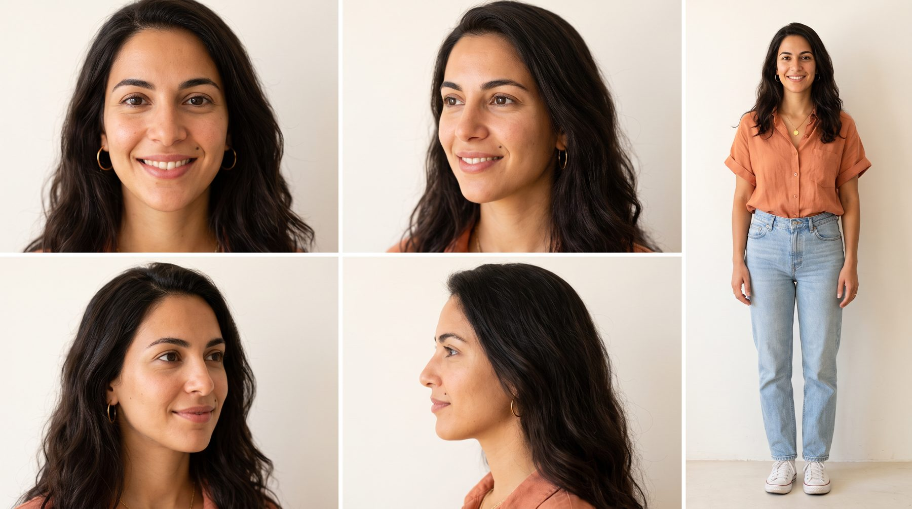
האמא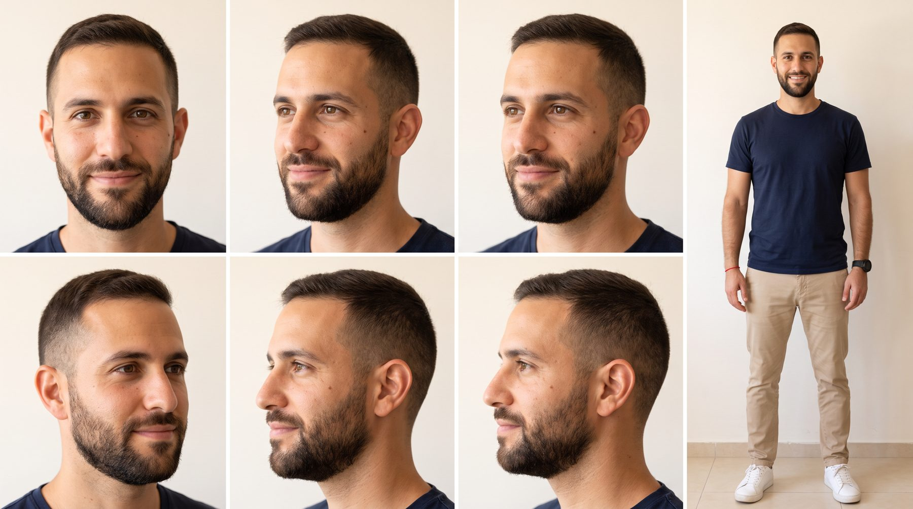
האבא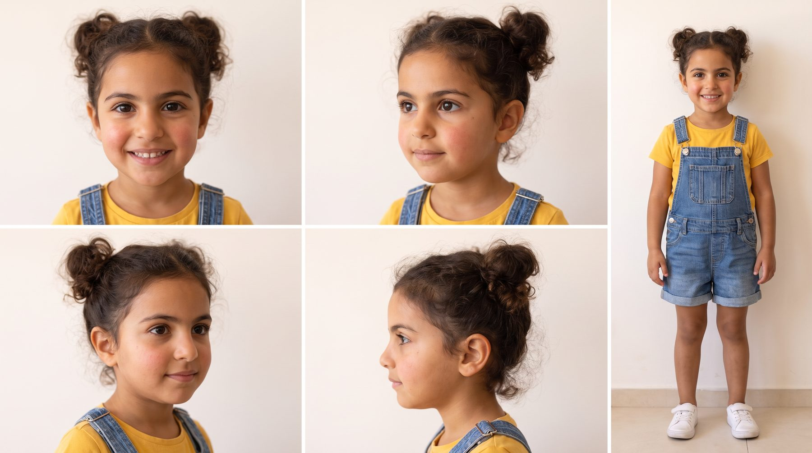
הבתהיא: שיער ערמוני גלי עד הכתפיים, פנים עגולות וחמות, טי-שירט כתום. הוא: תלתלים שחורים קצרים, זיפים, חיוך רחב, הנלי כחול ומכנסיים קצרים. הבת: תלתלים ערמוניים בחצי קוקו, חולצה כתומה בהירה.
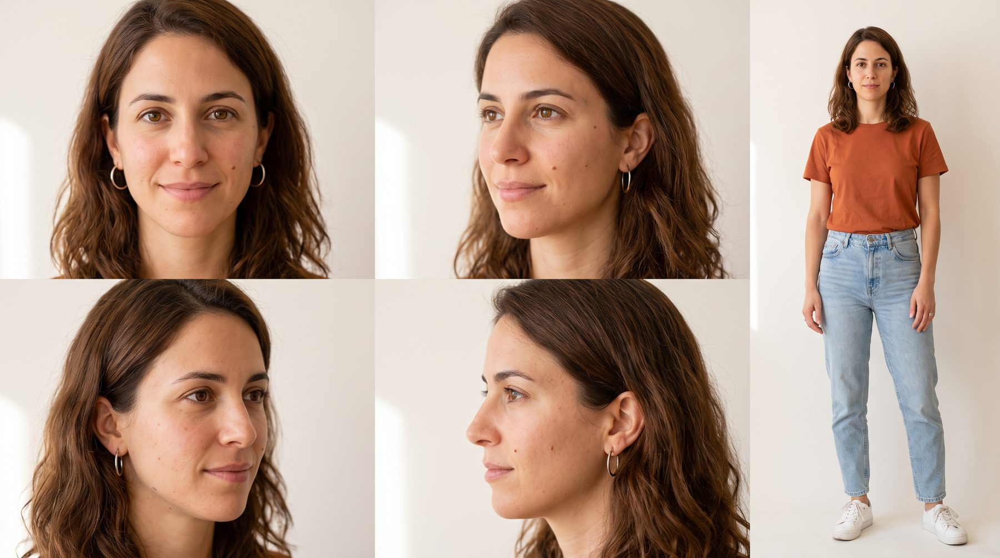
האמא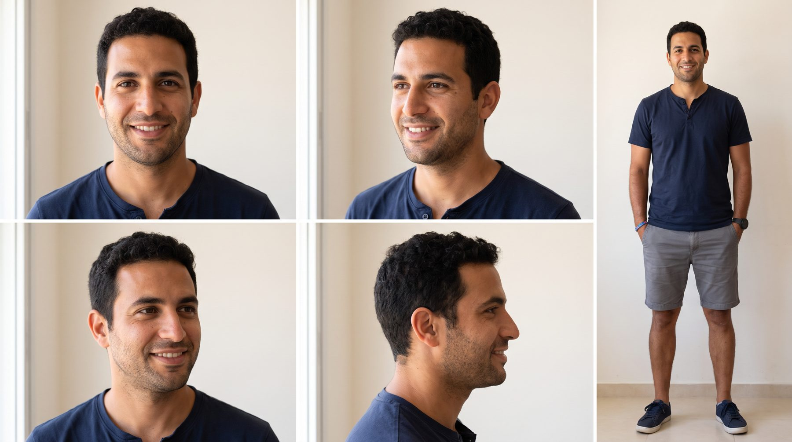
האבא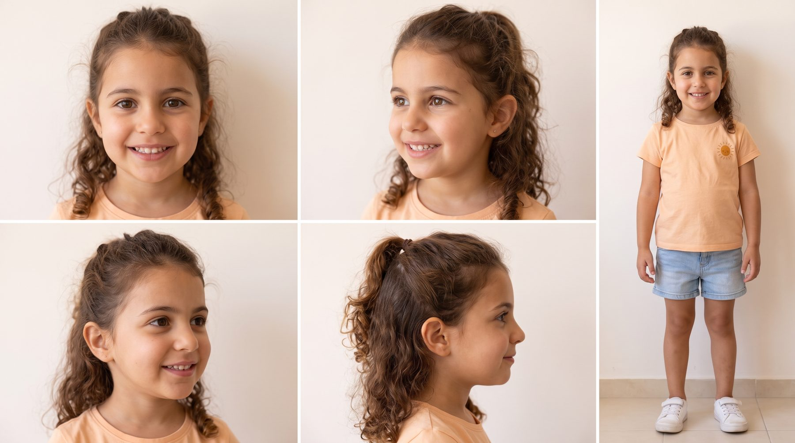
הבתהיא: שיער כהה חלק בקוקו גבוה, מבנה ספורטיבי, אוברשירט כתום בהיר על גופייה לבנה. הוא: שיער חום בהיר קצר, זקן מטופח, טי-שירט כחול רויאל. הבת: שיער כהה חלק בקוקו בצד, שמלה צהובה.
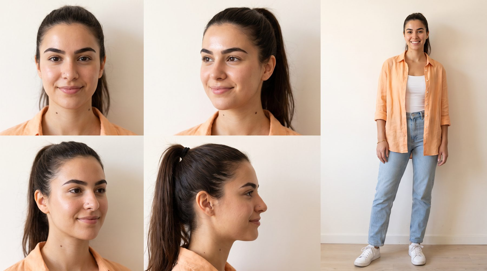
האמא האבא
האבא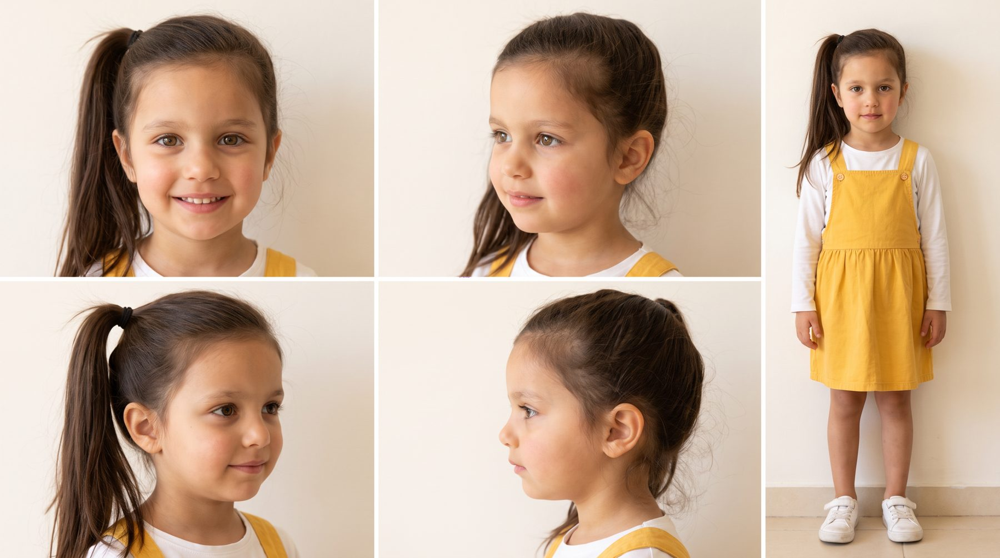
הבתלחצו על המשפחה שבחרתם, כתבו את השם שלכם ולחצו "שליחת התשובות" בתחתית הדף. הבחירה מגיעה ישירות אלינו, ומהמשפחה הזו נייצר את הסרטון.
 השכונה מהאווירמימין: ההדמיה שלכם · משמאל: כך זה ייראה בסרטון. כך תיראה השכונה ממבט רחפן בשעת זהב, לפי ההדמיה האווירית שלכם. הפריים הפותח של שוט 1 ובסיס לשוט 6.
השכונה מהאווירמימין: ההדמיה שלכם · משמאל: כך זה ייראה בסרטון. כך תיראה השכונה ממבט רחפן בשעת זהב, לפי ההדמיה האווירית שלכם. הפריים הפותח של שוט 1 ובסיס לשוט 6.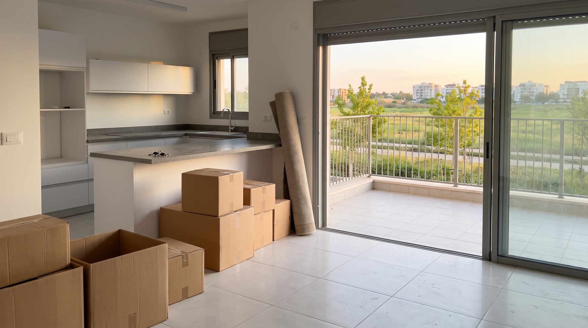
הדירה החדשהיום הכניסה: דירה ריקה, ארגזים, מפתחות על האי, דלת הזזה למרפסת שמשקיפה על השדות. שוטים 2–3.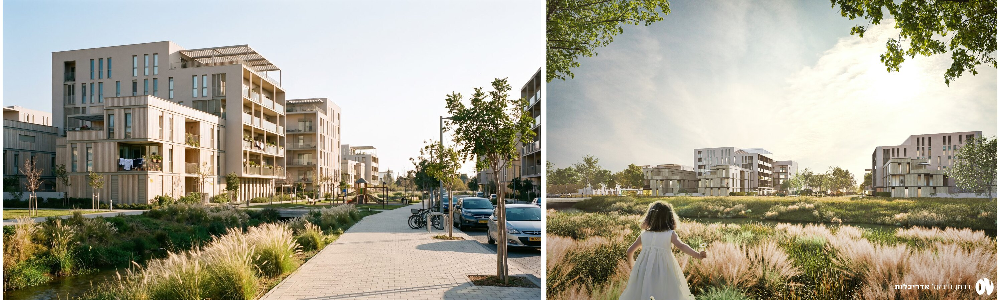
הרחובמימין: ההדמיה שלכם · משמאל: כך זה ייראה בסרטון. לפי ההדמיה VIEW D: בניינים של 4–7 קומות, טיח בהיר עם חלונות צרים, חיפוי עץ וקומות מרפסות, הפארק הלינארי עם הנחל והדשא הגבוה. שוט 4. גן המשחקים בפארקמימין: ההדמיה שלכם · משמאל: כך זה ייראה בסרטון. נדנדות עץ, מגלשה, סככות צל בכתום וכחול, הבניינים בחיפוי עץ מאחור, שקיעה. שוט 5.
גן המשחקים בפארקמימין: ההדמיה שלכם · משמאל: כך זה ייראה בסרטון. נדנדות עץ, מגלשה, סככות צל בכתום וכחול, הבניינים בחיפוי עץ מאחור, שקיעה. שוט 5.אותו מבנה בשני הסרטונים, בצבעי השכונה: לוגו השכונה, "דווקא עכשיו עוברים לשדרות", כוכבית 8516, שורת "מוגש מטעם" וארבעת הלוגואים. הפונט כאן זמני עד שנקבל את קבצי Almoni Tzar.
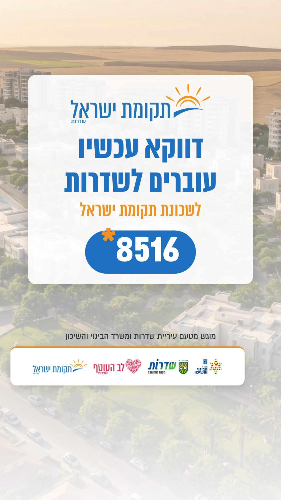
לוח לבן על רקע השכונה, לוגו השכונה, "דווקא עכשיו עוברים לשדרות", 8516* בגלולה כחולה, "מוגש מטעם" וארבעת הלוגואים. פונט זמני עד שנקבל את Almoni Tzar.לכל שוט: פריים סטוריבורד שמראה קומפוזיציה ותנועה (הפנים והלבוש יגיעו מהמשפחה שתבחרו), מה רואים, מה שומעים, איך המצלמה מצלמת, האור, הרגש וההמשכיות.
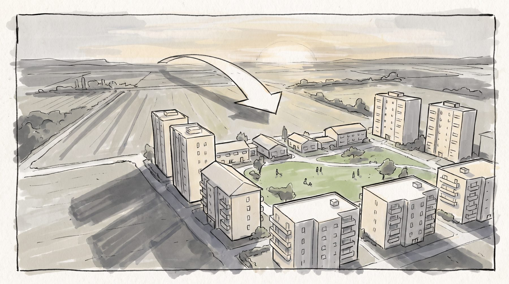
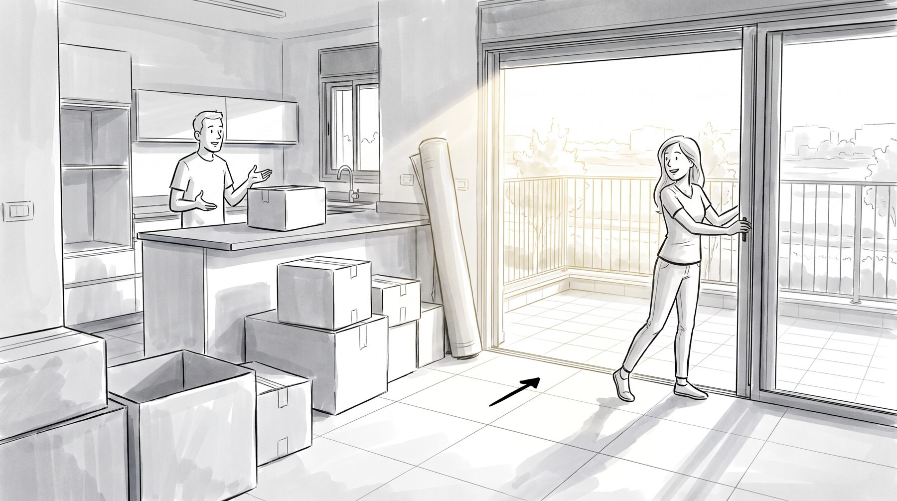
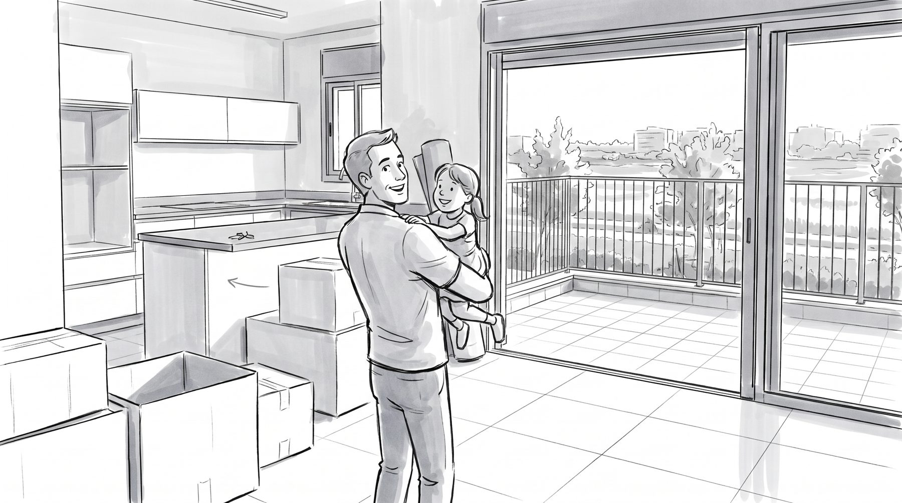
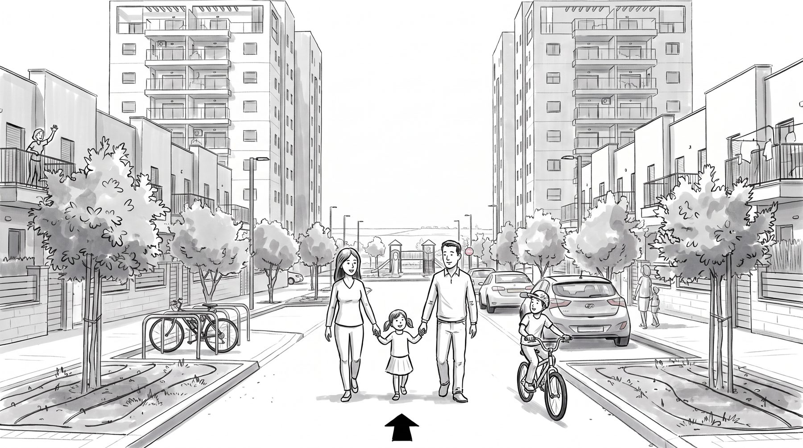
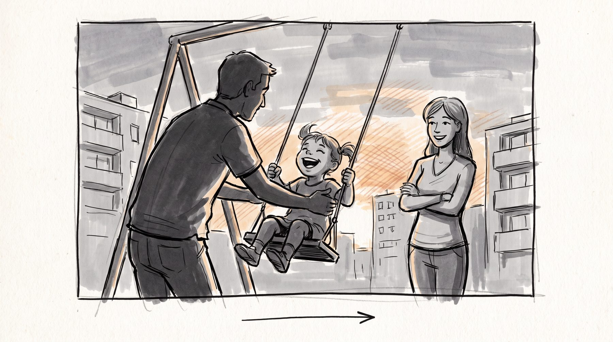
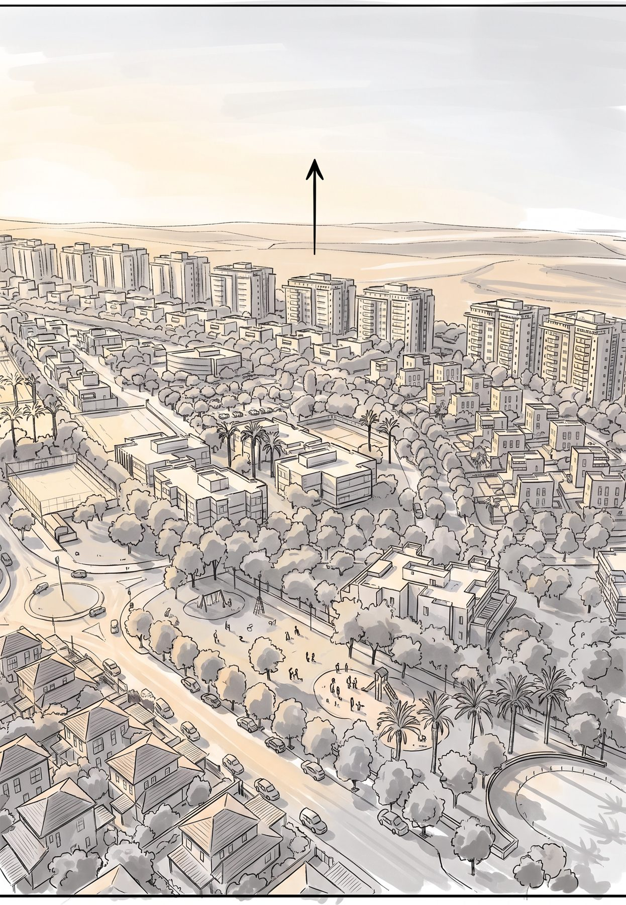
כל הטקסטים על המסך נבנים בעריכה, בפונט המותג Almoni Tzar, בעברית. הנוסחים כאן לאישורכם.
שני הסרטונים מופקים דרך Efect, בהובלת אוראל לוי: קריאטיב, תסריט, בימוי, יצירת הדמויות והשכונות, עריכה, קול, מוזיקה וגרפיקה, עד סרטונים מוכנים לפרסום.